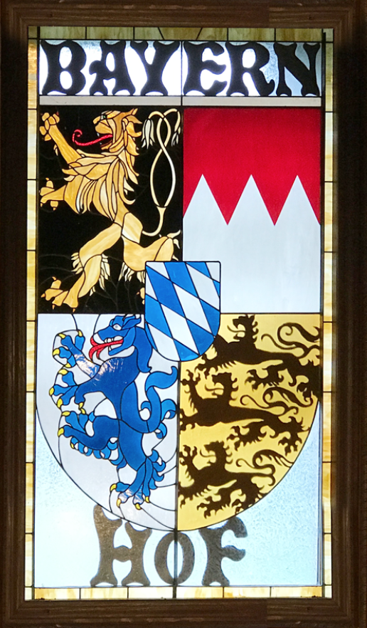

Bayernhof Museum
ABOUT

This extremely unique, 19,000 square foot museum (the former residence of Charles B. Brown, III, the Museum’s founder) houses a world-class collection of music boxes and other antique automatic music machines, as well as many other fascinating items.
The building itself provides guests with a most enjoyable experience as they pass from one unbelievable room to another, at times through hidden doors and secret passageways. And almost the entire south side of the Museum is glass, affording fantastic views up and down the Allegheny River.
HISTORY
Chuck Brown wanted a unique house with a great view of Pittsburgh and the surrounding countryside. In 1968, he rented a helicopter and flew up and down the three rivers, looking for a special spot to build his special home. On top of the mountain overlooking Sharpsburg, the Allegheny River, and the Pittsburgh Zoo, he found two parcels of land totaling slightly more than 18 acres. Construction began in 1976 and was completed in 1982. The result was “Bayernhof,” Chuck’s one-of-a-kind castle in O’Hara Township.
Chuck had a modest collection of antique music boxes which he had begun to purchase in the early 1970s. However, in the late 1980s, he began to accumulate larger, more intricate automatic antique music machines. This hobby soon became a passion, and eventually he assembled a world-class collection of these unusual and amazing inventions.